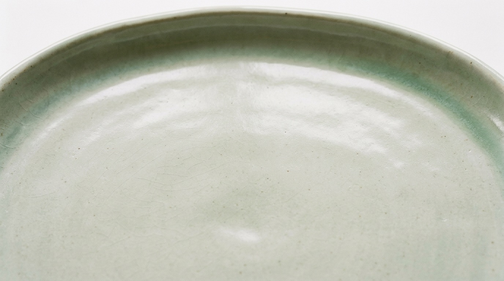
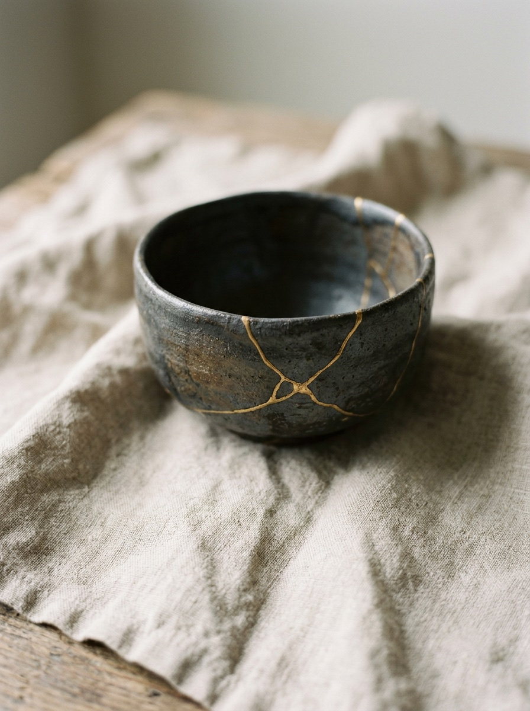
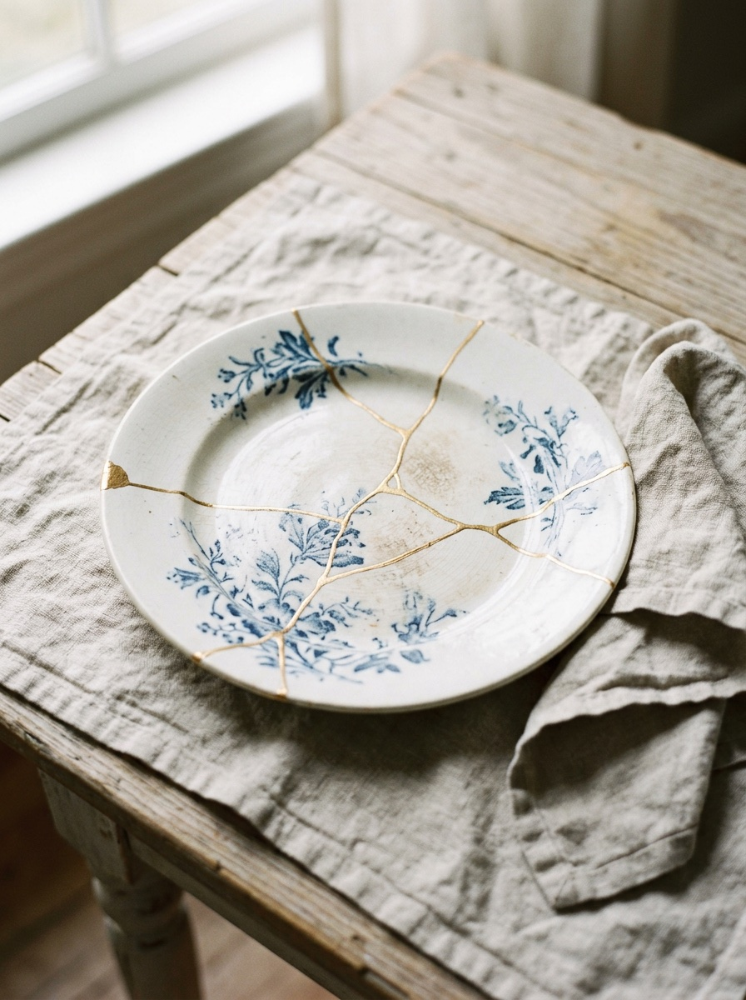
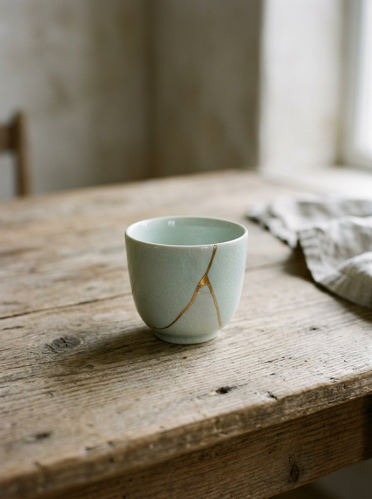
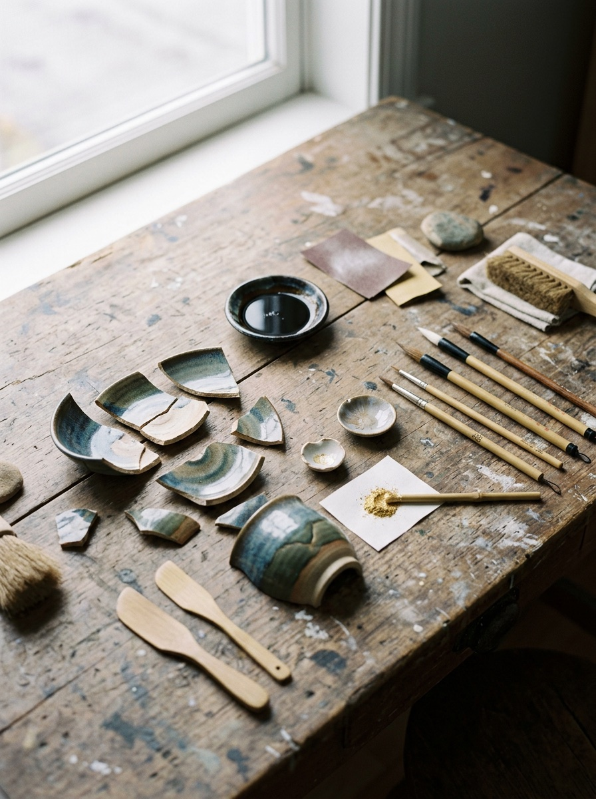
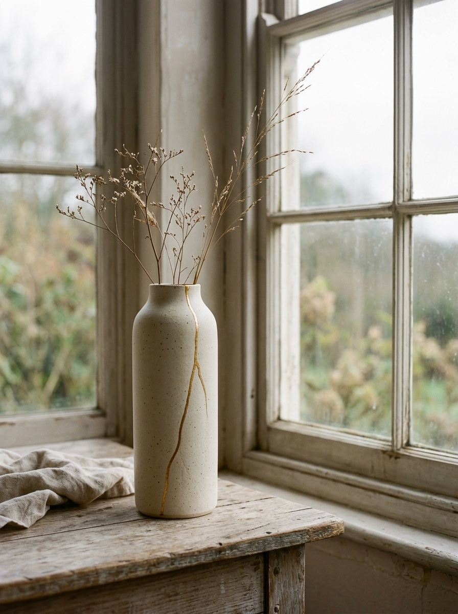
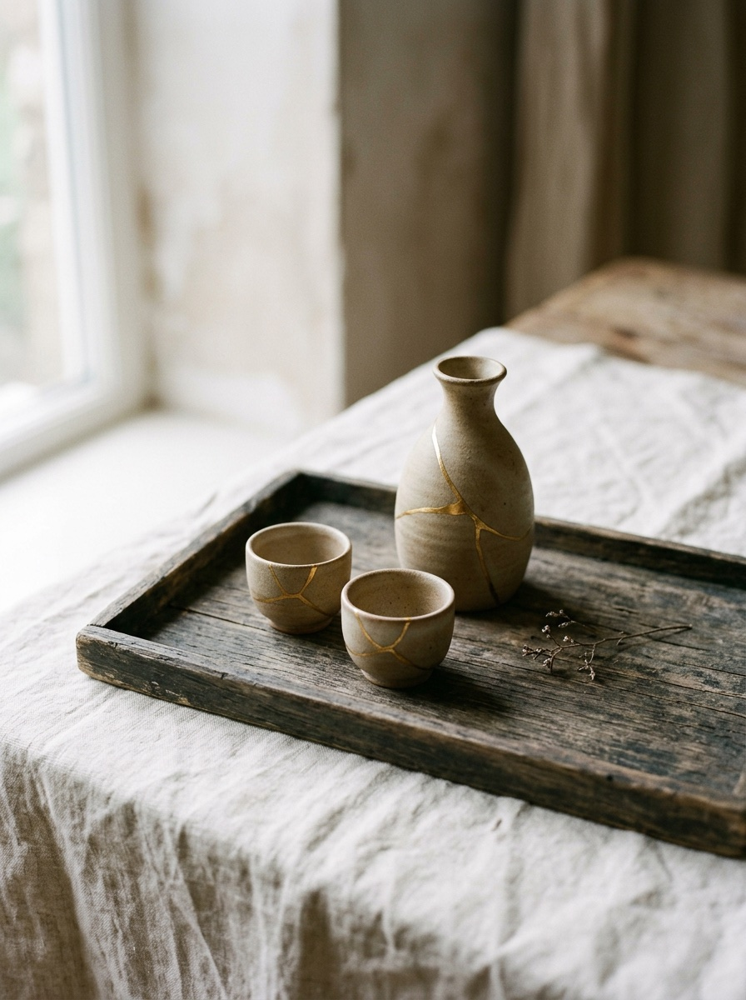

Seam Transitions

Mend 金
Kintsugi
Repairs & classes
(01) Studio
We mend broken ceramics the Japanese way, with lacquer and gold, so every repair becomes part of the story of the piece.
-

Tea Bowl 2025
-

Blue Plate 2024
-

Celadon Cup 2024
-

The Bench 2023
-

Family Vase 2022
-

Sake Set 2021